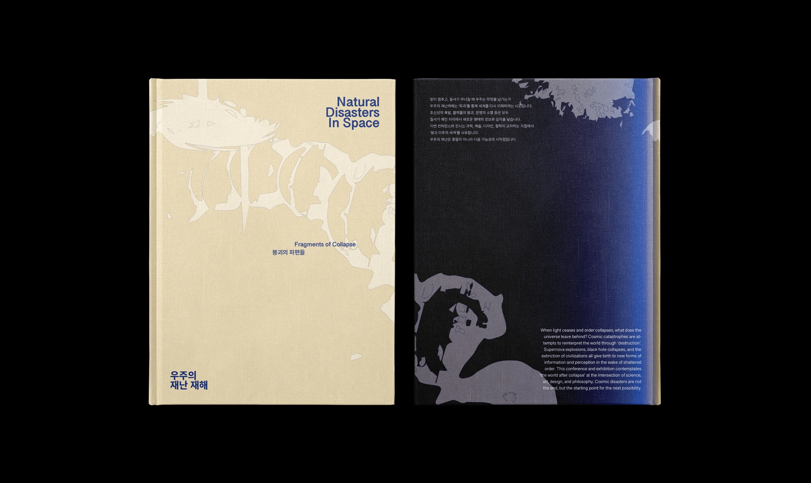
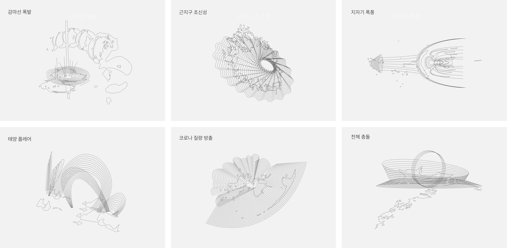

Graphic
우주의 재난재해라는 주제에 맞춰 각각의 재난재해 6개를 선의 형식으로 풀어낸 그래픽 모음입니다.

- 한글은 왼쪽 영문은 오른쪽에 배치하는 규칙을 사용하였습니다.
- 각각 목록에 해당하는 그래픽을 페이지 위에 얹어 놓아 조금 더 풍요롭게 내용 전달을 도와주도록 표현하였습니다.
- 6단락으로 그리드를 선정한 뒤 편집자의 의도에 맞추어 위 아래를 꽉 채워 사진을 정리하였습니다. 관련된 캡션은 오른쪽에 정리하였습니다.